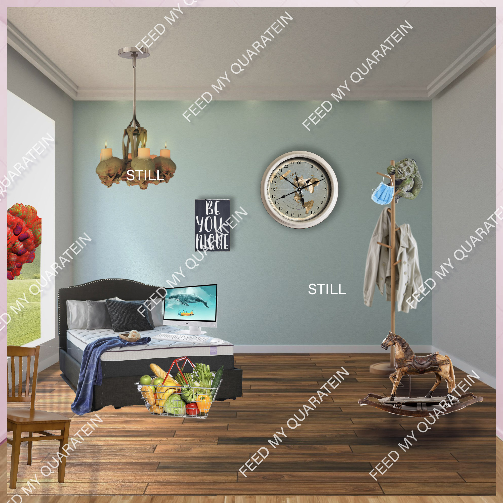

OPEN CALL!
Hello! We hope you had a profound Lenten experience these past 40 days.
We are releasing Volume II of our digital publication Feed My Quarantein on Sunday, May 9th. We hope to include a sample of your art.
We absolutely need your submissions by Wed. May 6th, 2020

Feed My Quarantein: Still
will be the second volume of a web-based scroll that tells the story of we, the human race, shedding the toxins of physical interaction and accepting this period of societal fasting. This is open to interpretation, but here are some themes which we think would be ripe for exploration:
- The Warp of Time
- Social Distance Chic
- When I Drink Alone, I Prefer to Be by Myself
- Home Gym
- Nature’s Resurgence
- Riot for Retail
- Breaking Quarantine
We are requesting still or animated images in this format
- JPG, PNG, or GIF images under 2mb
- max width 1500 px, 72 dpi
- Text / Prose under 50 words
- title/number the images for ex. Firstname_lastname_01.jpg
- List how you would like to be credited / your website or IG that you would like us to link to
You can submit 1-3 images or texts. PNGs or GIFs with transparent backgrounds would be ideal. We may alter the submissions to fit the format, but we will do our best to preserve the integrity of your original vision.
Please send your submissions to by.4ppointment.onl7@gmail.com